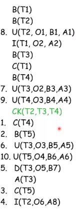

Transazione parte di programma caratterizzata da un inizio (begin-transaction e start transaction in SQL) ed una fine (end-transaction e non esplicita in SQL) e al cui interno deve essere eseguita una ed una sola volta uno dei seguenti comandi:
Un sistema transazionale (OLTP) è in grado di definire insiemi di transazioni per applicativo, e in modo che venga gestito tutto contemporaneamente.
start transaction;
update ContoCorrente
set Saldo = Saldo + 10 where NumConto = 1234;
commit work;
In questo caso il database salverà le modifiche alla chiamata di commit work, altimenti per un qualunque problema, verrà ripristinato uno stato precedente.
start transaction;
update ContoCorrente
set Saldo = Saldo + 10 where NumConto = 1234;
SELECT Saldo into A from ContoCorrente WHERE NumConto = 1234;
if(A > 10) then commit work;
else rollback work;
In questo caso le modifiche vengono salvate se il Saldo è maggiore di 10 altrimenti viene chimata rollback work. Chiamando rollback work è come se nessuna transazione è stata avviata (viene ignorata la transazione).
La transazione, come visto, gode di istruzioni ACID:
Atomicità
L'istruzione non può mantenere la base di dati in uno stato intermedio.
Consistenza
La transazione rispetta tutti i vincoli di integrità prima e dopo la transazione. Normalmente il controllo sui vincoli, viene fatto con la transazione, tuttavia, esiste la possibilità per alcune basi di dati, di "mettere in pausa" il controllo di vincoli di integrità. Quindi durante la transazione il controllo è disabilitato, dopo il commit, viene fatto un controllo per verificare che tutti i vincoli sono ancora rispettati.
Isolamento
Una transazione non risente degli effetti delle altre transazioni concorrenti (eseguite contemporanemente).
Durabilità
Gli effetti di una transazione andata in commit non vanno perduti.
Ognuno delle caratteristiche sopra citate vengono rispettate e gestite dal DBMS da utility separate.
Prima di parlare di gestore dell'affidibilità facciamo un piccolo ripasso sulla memoria. Abbiamo:
Il database in teoria è memorizzato nella memoria stabile.
Assicura l'atomicità e la durabilità delle transazioni attraverso tre comandi:
Il gestore dell'affidabilità usa un file di log. Questo file viene generato al primo avvio della base di dati.
Per ogni riga del file di log i record supportati sono:
operazioni
Le tipologie di operazioni che possiamo avere nel file di log sono:
checkpoint
Un checkpoint blocca l'esecuzione di tutte le transazioni in corso registrando le transazioni terminate e le transazioni in corso al momento del checkpoint.
Siamo sicuri che le transazioni finite sono state salvate, le transazioni non terminate con successo non sono state salvate ma almeno abbiamo una copia storica nel log.
Molto utile nel caso di guasti soft per crash dell'applicativo o guasto hardware e per effettuare un warm restart.
dump
Si tratta di una copia vera e propria del database per intero. Questa operazione viene effettuata quando non c'è traffico nel db. Molto utili in caso di guasti hard con perdita di dati. In questi casi verrà fatto un cold restart.
Il gestore dell'affidabilità permette di eseguire operazioni di:
L'operazione di UNDO su di un oggetto dipende dal tipo di operazione:
L'operazione di REDO su di un oggetto dipende dal tipo di operazione:
Queste due operazioni si dicono idempotenti nel senso che ripetere operazioni di undo o redo n volte o 1 volta ci permette di restituire lo stesso risultato.
undo(undo(A))=undo(A)
redo(redo(A))=redo(A)
Viene usato il modello fails-stop
Il processo di restart ha l'obiettivo di andare a classificare tutte le transazioni, distinguendo:
Se la restart è di tipo warm allora:
Se la restart è di tipo cold allora:
Esempio warm restart
